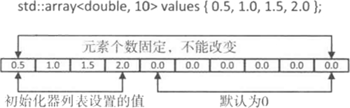
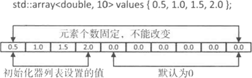

C++ array(STL array)容器用法详解
array 容器是 C++ 11 标准中新增的序列容器，简单地理解，它就是在 C++ 普通数组的基础上，添加了一些成员函数和全局函数。在使用上，它比普通数组更安全（原因后续会讲），且效率并没有因此变差。
和其它容器不同，array 容器的大小是固定的，无法动态的扩展或收缩，这也就意味着，在使用该容器的过程无法借由增加或移除元素而改变其大小，它只允许访问或者替换存储的元素。
array 容器有多种初始化方式，如下代码展示了如何创建具有 10 个 double 类型元素的 array 容器：
通过如下创建 array 容器的方式，可以将所有的元素初始化为 0 或者和默认元素类型等效的值：
当然，在创建 array 容器的实例时，也可以像创建常规数组那样对元素进行初始化：

图 1 初始化 array 容器
除此之外，array 容器还提供有很多功能实用的成员函数，如表 2 所示。
和其它容器不同，array 容器的大小是固定的，无法动态的扩展或收缩，这也就意味着，在使用该容器的过程无法借由增加或移除元素而改变其大小，它只允许访问或者替换存储的元素。
array 容器以类模板的形式定义在 <array> 头文件，并位于命名空间 std 中，如下所示：STL 还提供有可动态扩展或收缩存储空间的 vector 容器，后续章节会对其做详细介绍。
namespace std{
template <typename T, size_t N>
class array;
}
因此，在使用该容器之前，代码中需引入 <array> 头文件，并默认使用 std 命令空间，如下所示：
#include <array> using namespace std;在 array<T,N> 类模板中，T 用于指明容器中的存储的具体数据类型，N 用于指明容器的大小，需要注意的是，这里的 N 必须是常量，不能用变量表示。
array 容器有多种初始化方式，如下代码展示了如何创建具有 10 个 double 类型元素的 array 容器：
std::array<double, 10> values;
由此，就创建好了一个名为 values 的 array 容器，其包含 10 个浮点型元素。但是，由于未显式指定这 10 个元素的值，因此使用这种方式创建的容器中，各个元素的值是不确定的（array 容器不会做默认初始化操作）。提示，如果程序中已经默认指定了 std 命令空间，这里可以省略 std::。
通过如下创建 array 容器的方式，可以将所有的元素初始化为 0 或者和默认元素类型等效的值：
std::array<double, 10> values {};
使用该语句，容器中所有的元素都会被初始化为 0.0。当然，在创建 array 容器的实例时，也可以像创建常规数组那样对元素进行初始化：
std::array<double, 10> values {0.5,1.0,1.5,,2.0};
可以看到，这里只初始化了前 4 个元素，剩余的元素都会被初始化为 0.0。图 1 说明了这一点。
图 1 初始化 array 容器
除此之外，array 容器还提供有很多功能实用的成员函数，如表 2 所示。
| 成员函数 | 功能 |
|---|---|
| begin() | 返回指向容器中第一个元素的随机访问迭代器。 |
| end() | 返回指向容器最后一个元素之后一个位置的随机访问迭代器，通常和 begin() 结合使用。 |
| rbegin() | 返回指向最后一个元素的随机访问迭代器。 |
| rend() | 返回指向第一个元素之前一个位置的随机访问迭代器。 |
| cbegin() | 和 begin() 功能相同，只不过在其基础上增加了 const 属性，不能用于修改元素。 |
| cend() | 和 end() 功能相同，只不过在其基础上，增加了 const 属性，不能用于修改元素。 |
| crbegin() | 和 rbegin() 功能相同，只不过在其基础上，增加了 const 属性，不能用于修改元素。 |
| crend() | 和 rend() 功能相同，只不过在其基础上，增加了 const 属性，不能用于修改元素。 |
| size() | 返回容器中当前元素的数量，其值始终等于初始化 array 类的第二个模板参数 N。 |
| max_size() | 返回容器可容纳元素的最大数量，其值始终等于初始化 array 类的第二个模板参数 N。 |
| empty() | 判断容器是否为空，和通过 size()==0 的判断条件功能相同，但其效率可能更快。 |
| at(n) | 返回容器中 n 位置处元素的引用，该函数自动检查 n 是否在有效的范围内，如果不是则抛出 out_of_range 异常。 |
| front() | 返回容器中第一个元素的直接引用，该函数不适用于空的 array 容器。 |
| back() | 返回容器中最后一个元素的直接应用，该函数同样不适用于空的 array 容器。 |
| data() | 返回一个指向容器首个元素的指针。利用该指针，可实现复制容器中所有元素等类似功能。 |
| fill(val) | 将 val 这个值赋值给容器中的每个元素。 |
| array1.swap(array2) | 交换 array1 和 array2 容器中的所有元素，但前提是它们具有相同的长度和类型。 |
除此之外，C++ 11 标准库还新增加了 begin() 和 end() 这 2 个函数，和 array 容器包含的 begin() 和 end() 成员函数不同的是，标准库提供的这 2 个函数的操作对象，既可以是容器，还可以是普通数组。当操作对象是容器时，它和容器包含的 begin() 和 end() 成员函数的功能完全相同；如果操作对象是普通数组，则 begin() 函数返回的是指向数组第一个元素的指针，同样 end() 返回指向数组中最后一个元素之后一个位置的指针（注意不是最后一个元素）。
另外，在 <array> 头文件中还重载了 get() 全局函数，该重载函数的功能是访问容器中指定的元素，并返回该元素的引用。
例如代码演示了表 2 中一部分成员函数的用法和功能：正是由于 array 容器中包含了 at() 这样的成员函数，使得操作元素时比普通数组更安全。
#include <iostream>
//需要引入 array 头文件
#include <array>
using namespace std;
int main()
{
std::array<int, 4> values{};
//初始化 values 容器为 {0,1,2,3}
for (int i = 0; i < values.size(); i++) {
values.at(i) = i;
}
//使用 get() 重载函数输出指定位置元素
cout << get<3>(values) << endl;
//如果容器不为空，则输出容器中所有的元素
if (!values.empty()) {
for (auto val = values.begin(); val < values.end(); val++) {
cout << *val << " ";
}
}
}
注意，代码中的 auto 关键字，可以使编译器自动判定变量的类型。运行这段代码，输出结果为：
3
0 1 2 3
表 2 中其他成员函数的用法，这里不再给出具体实例，有兴趣的读者，可自行根据各个函数的功能描述编写实例代码进行测试。
关注公众号「站长严长生」，在手机上阅读所有教程，随时随地都能学习。内含一款搜索神器，免费下载全网书籍和视频。

微信扫码关注公众号